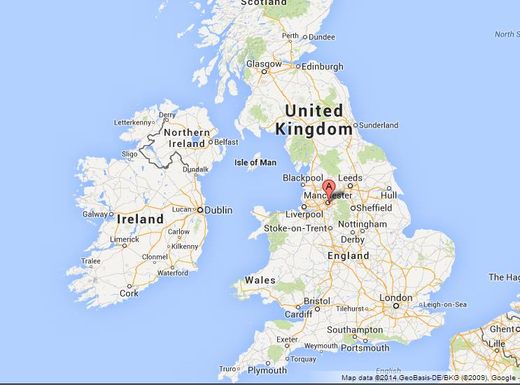

HOME THINGSTODO FOODANDDRINK SHOPPING WHERETOSAY
Manchester city Metropolitan Borough in the Metropolitan county of Greater Manchester urban county, Northwestern England. Most of the city, including the historic core, is in the historic county of Lancashire, but it includes an area south of the River Mersey in the historic county of Cheshire.
It was in 1904 that Charles Rolls and Henry Royce first met in Manchester’s city center Midland Hotel. Two years later the company Rolls-Royce Ltd was formed. Visit the Midland Hotel for afternoon tea and see the statue dedicated to their meeting. In 1948 Manchester University professors developed the first computer to have a stored programme and memory. Nicknamed ‘Baby’, it has made the computer what it is today. A replican can be seen at the Museum of Science and Industry